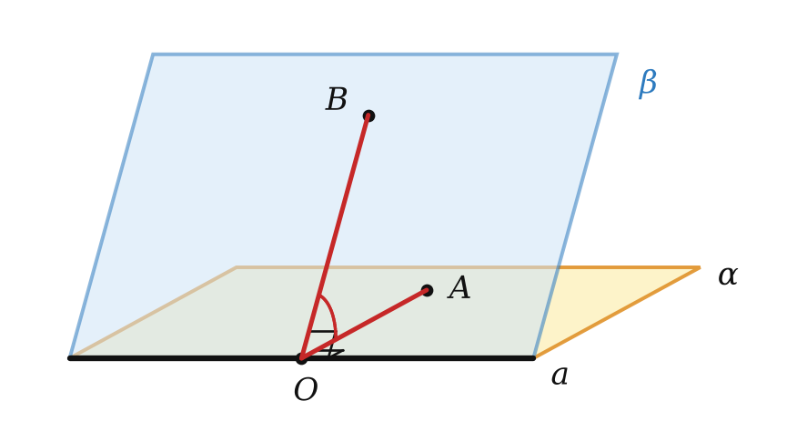
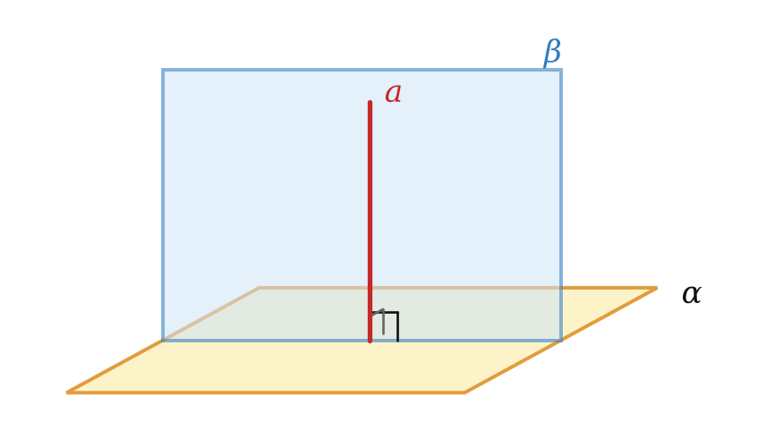
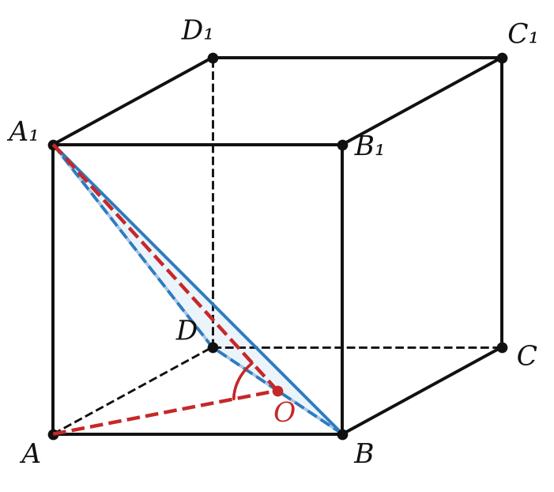

Теория
Двугранный угол
Прямая на плоскости делит её на две полуплоскости. В планиметрии угол — два луча с общим началом; в пространстве аналог — две полуплоскости с общей границей.
Двугранным углом называется фигура, образованная прямой a и двумя полуплоскостями с общей границей a, не принадлежащими одной плоскости. Прямая a — ребро двугранного угла, полуплоскости — его грани.
Модели: раскрытая книга (ребро — корешок, грани — страницы), двускатная крыша, полураскрытая дверь и стена. Двугранный угол «раскрывается» как дверь: чем шире открыта дверь, тем он больше. Измерять его будем обычным углом — линейным.

Отметим на ребре точку O и проведём в каждой грани луч из O перпендикулярно к ребру: OA и OB. Угол AOB называется линейным углом двугранного угла. Градусная мера двугранного угла — градусная мера его линейного угла.
Для двери: ребро — ось петель (вертикаль), а линейный угол — угол на полу между нижним краем двери и линией стены. Оба этих луча перпендикулярны оси петель — как и требует определение.
Все линейные углы двугранного угла равны друг другу.
Возьмём два линейных угла AOB и A₁O₁B₁. Лучи OA и O₁A₁ лежат в одной грани и перпендикулярны к одной прямой a. Два перпендикуляра к одной прямой в одной плоскости параллельны (планиметрия), а так как лучи лежат в одной полуплоскости — грани, они сонаправлены. Так же сонаправлены OB и O₁B₁. Углы с сонаправленными сторонами равны (урок 3). ∎
Двугранный угол бывает острым, прямым, тупым — как и его линейный угол. Его градусная мера больше 0° и меньше 180° (грани не лежат в одной плоскости).
Угол между плоскостями. Перпендикулярные плоскости
Две пересекающиеся плоскости образуют четыре двугранных угла с общим ребром. Если один из них равен φ, то остальные — 180° − φ, φ, 180° − φ. Углом между пересекающимися плоскостями называют наименьший из них (не больше 90°).
Две пересекающиеся плоскости называются перпендикулярными, если угол между ними равен 90°. Обозначение: α ⊥ β.
Если одна из двух плоскостей проходит через прямую, перпендикулярную к другой плоскости, то такие плоскости перпендикулярны.

Пусть плоскость β проходит через прямую a, перпендикулярную к α, и O — точка пересечения a с α. Плоскости пересекаются по прямой c, проходящей через O. Проведём в α через O прямую m ⊥ c. Так как a ⊥ α, то a ⊥ c и a ⊥ m. Значит, угол между лучами прямых a и m — линейный угол двугранного угла между плоскостями, и он прямой. ∎
Следствие. Плоскость, перпендикулярная к прямой, по которой пересекаются две данные плоскости, перпендикулярна к каждой из этих плоскостей.
Если плоскости перпендикулярны, то прямая, проведённая в одной из них перпендикулярно к линии их пересечения, перпендикулярна к другой плоскости.
Почему: пусть α ⊥ β, c — линия пересечения, AC ⊂ α, AC ⊥ c. Проведём в β через C прямую CE ⊥ c. Угол ACE — линейный угол прямого двугранного угла, значит, AC ⊥ CE. Итак, AC перпендикулярна к двум пересекающимся прямым c и CE плоскости β, по признаку AC ⊥ β.
Линейный угол строится перпендикулярно к ребру в обеих гранях и из одной точки ребра. Если провести в гранях произвольные отрезки, получится угол, который не равен двугранному. Удобный способ: из точки одной грани опустить перпендикуляр на другую грань и применить теорему о трёх перпендикулярах.
Разбор примеров
В треугольнике ABC ∠C = 90°, AC = 4. Отрезок MA перпендикулярен к плоскости ABC, MA = 4. Найдите двугранный угол MBCA (с ребром BC).
Запись «двугранный угол MBCA» означает: ребро — прямая BC (средние буквы), в одной грани лежит точка M, в другой — точка A.
AC ⊥ BC, AC — проекция MC; по теореме о трёх перпендикулярах MC ⊥ BC. Значит, ∠MCA — линейный угол двугранного угла.
В прямоугольном треугольнике MAC катеты равны 4 и 4: ∠MCA = 45°.

Ребро куба ABCDA₁B₁C₁D₁ равно a. Найдите тангенс угла между плоскостями A₁BD и ABCD.
Плоскости пересекаются по прямой BD — это ребро двугранного угла. Пусть O — центр квадрата ABCD. AO ⊥ BD (диагонали квадрата), AO — проекция A₁O ⟹ по теореме о трёх перпендикулярах A₁O ⊥ BD. Линейный угол — ∠A₁OA.
tg ∠A₁OA = AA₁ / AO = a / (a√2/2) = √2.
Плоскости α и β перпендикулярны и пересекаются по прямой c. Точка A ∈ α, B ∈ β; AC и BD — перпендикуляры к прямой c, AC = 3, BD = 4, CD = 12. Найдите AB.
AC ⊥ c и α ⊥ β ⟹ по свойству AC ⊥ β. Значит, AC ⊥ CB.
CB² = CD² + BD² = 144 + 16 = 160; AB² = AC² + CB² = 9 + 160 = 169, AB = 13.
Задачи урока
Реши в тетради, к каждой задаче — чертёж. Разберём на занятии.
Тест к уроку
Домашнее задание
Задачи Д1–Д6 ниже. На чертежах выделить линейный угол и объяснить, почему его стороны перпендикулярны ребру. Выучить признак перпендикулярности плоскостей.